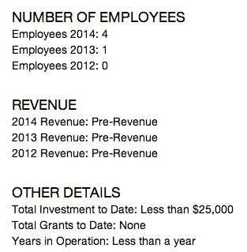

Welcome to the AfriLabs Terminal, a portal for discovering opportunities for investment or social impact in Africa. This data that is monitored, mined and made available by the team at AfriLabs. We take a different approach to sharing data about early stage-African investment opportunities by considering the environments the companies operate in, in addition to traditional performance indicators.
Terminal Documentation
The AfriLabs Terminals was built to be a due-diligence support tool for funders, investors, impact investors, and others who want to research specific opportunities in the African startup ecosystem. Using the Terminal will allow investors to learn which companies are growing quickly and present the biggest opportunities for investment and/or social impact.
I. The Directory
The AfriLabs Terminals was built to be a due-diligence support tool for funders, investors, impact investors, and others who want to research specific opportunities in the African startup ecosystem. Using the Terminal will allow investors to learn which companies are growing quickly and present the biggest opportunities for investment and/or social impact.
II. The Risk Matrix
The risk profiles for each company is laid out on a standard radar chart that measures three metrics: Age of the company, Relative growth of the company (based on all factors), Current number of employees, and two custom metrics, the ALIO (AfriLabs Investment Opportunity Score) which indicates a great investment opportunity and ALSI (AfriLabs Social Impact Score) which indicates a great social impact opportunity.
How to read the chart. The closer the colored area is to the metric title, the stronger the company is in that category. The further the area is to the center the less well it is in that given metric.

III. Company Profile
Company profiles include information on each company including year on year Number of Employees, year on year Revenue and Other relevant details.
